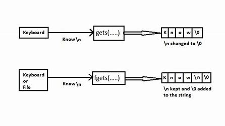

scanf() is a function used for taking input from the standard input (usually the keyboard) in C. It reads input from the standard input stream stdin and scans that input according to the format provided.
Syntax:
int scanf(const char *format, ...);
Example:
int num;
scanf("%d", &num); // Reads an integer
Preferred Over:
gets() is a function used to read a string from the standard input (usually the keyboard) in C. It reads characters from the standard input stream stdin and stores them as a C string into the buffer pointed by str until a newline character '\n' or EOF is encountered.
Syntax:
char *gets(char *str);
Example:
char str[100];
gets(str); // Reads a string
Scenarios:
fgets() is a function used to read a line from the specified stream (usually stdin) in C. It reads characters from the specified stream stream and stores them as a C string into the buffer pointed by str until a newline character '\n' is encountered.
Syntax:
char *fgets(char *str, int num, FILE *stream);
Example:
char str[100];
fgets(str, sizeof(str), stdin); // Reads a string
Scenarios:
scanf("%[^\n]") is a format specifier used to read a string with spaces using scanf. It reads input from the standard input stream until a newline character '\n' is encountered.
Syntax:
int scanf("%[^\n]", str);
Example:
char str[100];
scanf("%[^\n]", str); // Reads a string with spaces
Scenarios:
Scenario: Your program needs to accept the user's name as input. Names typically consist of a single word without spaces.
